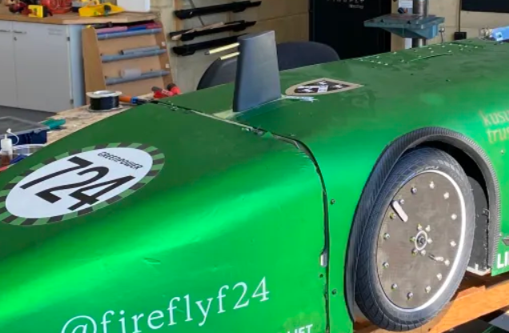
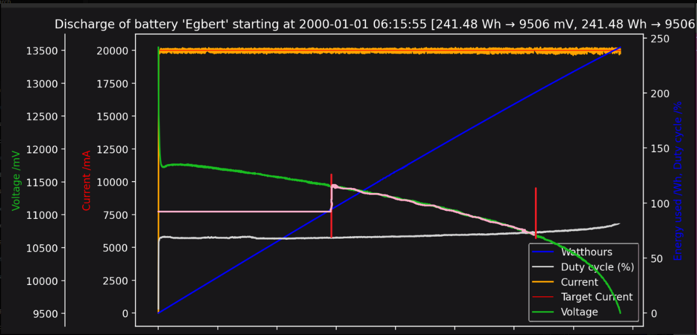
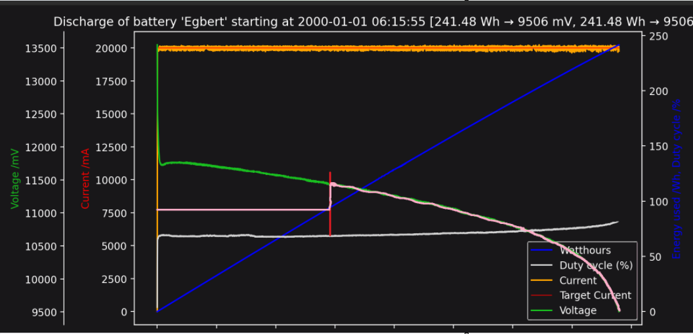

Luciferin pt3: Going faster
Published
This is the third article in the series documenting the design and implementation of Luciferin, a custom motor controller for Firefly’s Greenpower F24+ car. Part 1 examined the electrical behaviour of the motor and justified the use of synchronous rectification. Part 2 focused on the practical realities of implementing that in hardware, from floating gate drive to deadtime. As with the two previous instalments, this article can be read independently. However, to fully appreciate the rationale behind some of the decisions discussed here, I recommend at least skimming Parts 1 and 2 beforehand.
With the hardware complete, the remaining question is not how to switch the motor, but how it ought to be controlled. In a power-limited endurance series, the objective is not simply to produce torque, but to distribute a finite quantity of energy over the course of an hour in a way that minimises waste and maximises lap time. This article therefore moves into software: using measured current, vehicle speed and environmental inputs to determine how much power the motor should receive at any given moment, and why.
For now, the complete source code will not be published here. While I was responsible for the architecture and much of the implementation, the final software was very much a team effort; particular thanks are owed to my friends Eliyahu and Victor. A non-trivial portion of it was also written on the bus to a race, and therefore reflects the kind of pragmatic iteration that gets a car “just about working” rather than the kind of structure that is fit to read. Presenting it in full would likely introduce more confusion than clarity.
In this particular kind of endurance racing, performance is not about peak current. It is about how intelligently you spend energy. The batteries are perfectly capable of delivering aggressive current spikes; the issue is not whether they can, but what it costs over an hour. High discharge rates reduce usable capacity, increase losses and distort the delicate balance between pace and longevity. The objective is therefore to ration current to the motor in a way that maximises the total watt-hours discharged from the battery over the one-hour duration of the race. Or, in simpler terms: how do we extract the maximum possible performance from our batteries in a single race?
To explore this, I will outline three distinct, data-driven control strategies (buzzwords reluctantly included). The first uses PID-based current averaging to smooth demand on the batteries. The second incorporates wind-speed feedback to account for aerodynamic losses in real time. The third introduces resilience to red flags and other race interruptions. All three were implemented on the car across the season to varying degrees of completeness and success, with changes made between races as the system was iterated and refined.
The first of the three strategies explored here is current shaping. Before discussing implementation, it is worth restating why this matters.
Part 1 introduced the non-linear discharge behaviour of the lead-acid batteries used in Greenpower. The critical implication is simple: higher discharge currents reduce usable capacity disproportionately. The penalty is nonlinear. Brief periods of aggressive current draw cost more energy than their average value suggests.
This asymmetry is what makes smoothing worthwhile. A current spike does not simply “balance out” later; it increases internal losses, worsens voltage sag and reduces the total watt-hours that can be extracted over the course of a race. The objective, then, was to reduce unnecessary current transients without materially compromising lap time.
The most obvious way to enforce smoother current behaviour is to regulate it directly. Define a target current, measure the actual motor current and adjust PWM duty cycle such that the two converge. At sixteen, my instinct was to reach immediately for a PID loop.
I originally intended to implement exactly that, and did in fact attempt it. A simplified form of the early structure resembled the rather textbook approach:
float error = target_current - measured_current;
integral += error * dt;
float derivative = (error - previous_error) / dt;
float pwm_limit = Kp * error
+ Ki * integral
+ Kd * derivative;
pwm_limit = clamp(pwm_limit, 0.0f, PWM_MAX);
previous_error = error;Conceptually, this is reasonable. The proportional term reacts immediately to deviations, the integral term removes steady-state error and the derivative term damps oscillation.
In practice, it was more complexity than the system deserved. Two architectural details are important here. First, the motor controller does not unilaterally command PWM. The driver throttle remains the primary input and, in race trim, is often held near 100%. The control loop therefore acts as a limiter: it computes a maximum permissible PWM, and the final command is the lower of the driver request and that limit.
float pwm_final = fminf(pwm_throttle, pwm_limit);
set_pwm(pwm_final);Second, the dominant problem was not steady-state current error. The real issue was sharp demand transitions.
At standstill the motor produces no back EMF. In that condition, applying full battery voltage results in a large initial current spike, limited primarily by winding resistance. This is precisely the kind of high-discharge transient that disproportionately reduces usable battery capacity. It therefore made more sense to control how quickly demand was allowed to increase than to tightly regulate its instantaneous value.
In the final implementation, the derivative and integral terms were removed and the controller settled on proportional regulation combined with throttle-demand ramping. Notably, the throttle input was allowed to fall immediately for safety and drivability.
A simplified representation of an upward throttle ramp is:
if (throttle_input > throttle_prev) {
float delta = throttle_input - throttle_prev;
throttle_prev += clamp(delta, 0.0f, THROTTLE_STEP);
} else {
throttle_prev = throttle_input;
}
float pwm_throttle = throttle_to_pwm(throttle_prev);The proportional limiter then constrained current behaviour without attempting perfect regulation:
float error = target_current - measured_current;
float pwm_limit = clamp(base_limit + Kp * error, 0.0f, PWM_MAX);
float pwm_final = fminf(pwm_throttle, pwm_limit);
set_pwm(pwm_final);This does not produce mathematically perfect current tracking. It was never intended to. Instead, it reduces abrupt current spikes during launch and aggressive throttle application.
The second example of an efficiency gain came not from shaping how current was delivered, but from reconsidering how much should be delivered in the first place. Current smoothing protects the battery from abrupt inputs, but it does not protect it from the environment. Even with a well-behaved control loop, the car remains subject to aerodynamic forces that vary lap to lap and race to race. The most significant of these is wind.
This second control strategy considers relative airspeed. Much like the previous section protected against the disproportionate penalty associated with high current draw, there exists another asymmetry in the system: the energy cost of aerodynamic drag increases sharply with airspeed. The car does not experience ground speed, but relative airspeed, and the power required to overcome drag rises rapidly as that airspeed increases. A headwind therefore imposes a larger energy penalty than a tailwind rewards in effective energy. The intent of this strategy was to respond to changes in relative airspeed in order to keep the car operating within a more consistent aerodynamic regime.
This ties in neatly with the pitot yaw-tube system implemented on the car. While I was not responsible for the mechanical design pictured, I designed and built the associated CAN node responsible for collecting differential-pressure data from the sensor. This node converted the measured pressure differential into a relative-airspeed value and transmitted it to the ECU over CAN, where it could be incorporated into the control strategy.

Funnily enough, at the time of writing I have just finished building a CAN bus library for Manchester Stinger Motorsports, the Formula Student team at the University of Manchester. It is slightly strange to realise that nearly four years later I am still working with CAN in one form or another. Almost as if I enjoy it.
Greenpower regulations prohibit boosting the battery voltage beyond its nominal value. Even if a tailwind reduces aerodynamic drag, there is little opportunity to convert that directly into additional top speed. The motor cannot simply be driven harder because conditions are favourable.
The asymmetry therefore becomes strategic. A tailwind offers limited upside, but a headwind imposes a significant and disproportionate energy penalty. The control strategy was designed accordingly: it responded conservatively to sustained increases in relative airspeed by slightly reducing the allowable power ceiling, preventing the car from unknowingly burning energy into aerodynamic drag. When conditions improved, the controller returned to its nominal behaviour rather than attempting to exceed it.
The objective is not to make the car opportunistically faster in favourable conditions, but to prevent it from becoming disproportionately inefficient in adverse ones. As in the previous section, the focus was on protecting against asymmetry rather than chasing absolute performance.
The final control strategy concerns the opportunity presented by red-flag conditions. In Greenpower, the race duration remains fixed at one hour, regardless of interruptions caused by red flags. During a red flag, the car must stop entirely. For that period, no meaningful discharge occurs, yet the clock continues to run. The energy budget remains the same; the available time does not.
The objective, however, is unchanged. We still aim to extract as much usable energy from the batteries as possible by the time the chequered flag falls. Under normal conditions this translates into a relatively steady watt-hour budget per lap. When a red flag occurs, that budget must be recalculated. The remaining energy must now be deployed over a shorter effective running window.
In other words, the allowable watt-hours per lap increases immediately after a red flag. If the controller were to continue operating under its original pacing assumptions, the car would finish conservatively, with unused capacity left in the batteries. The strategy therefore required the energy allocation to adapt dynamically to the compressed time horizon.

Terminal voltage decreases non-linearly over time, while cumulative energy usage increases approximately linearly. In uninterrupted running, the control objective is to align energy deployment with the fixed race duration rather than full battery depletion.
Remembering from earlier that voltage boosting is prohibited, this makes the problem less straightforward than simply “using more power” after a red flag. The battery voltage cannot be increased beyond its nominal value, so there is no mechanism to overdrive the motor in the conventional sense.
One solution is to operate below that limit during normal running. The controller imposes an artificial ceiling on effective motor voltage using PWM, deliberately holding it slightly below what the battery could supply. The car is geared accordingly so that competitive performance is achieved within this constrained envelope, even though the full battery potential is not being utilised.
This creates intentional headroom.
When a red flag compresses the effective race time, that headroom can be released. The PWM ceiling is relaxed, allowing the motor to operate at or near 100% duty cycle for the remainder of the race. No voltage is “boosted” in violation of the rules; the controller simply stops holding it back. Energy that would otherwise have remained unused can now be deployed over the shortened running window.
The behaviour is illustrated below.

The motor-voltage ceiling is deliberately constrained below battery voltage during nominal running. At the red flag, the imposed ceiling is relaxed, allowing previously reserved headroom to be deployed over the shortened effective race duration. The race concludes before full battery depletion; no voltage is boosted beyond the battery’s nominal value.
The strategy does not create additional energy; it reallocates it in time. By deliberately pacing discharge under normal conditions and relaxing that constraint when the race is compressed, the controller ensures that available capacity is neither squandered early nor left unused at the chequered flag.
With that, the three control strategies outlined at the beginning of this article have each been explored in turn. Each addressed a different asymmetry in the system, and each was implemented to varying degrees over the years.
It is worth stating, however, that implementing all three simultaneously in their most developed forms would likely introduce more complexity than benefit. The purpose of this article has not been to present a perfectly unified race algorithm, but to explore a set of approaches that were trialled, refined and sometimes set aside. In practice, a “good enough” and well-understood race strategy is often more effective than an ambitious but fragile one. Reliability, predictability and driver confidence frequently outweigh marginal theoretical gains.
There is more work ahead.